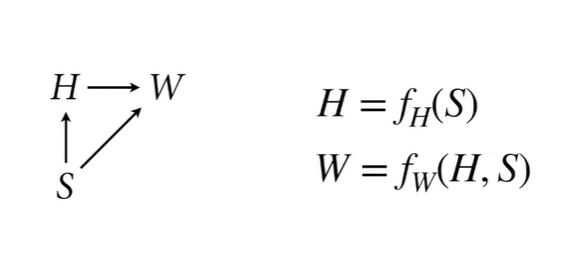
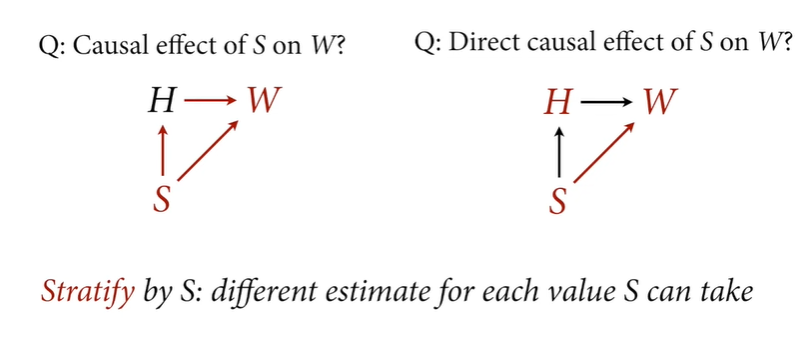
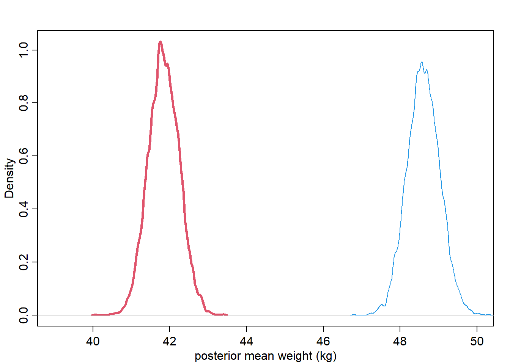
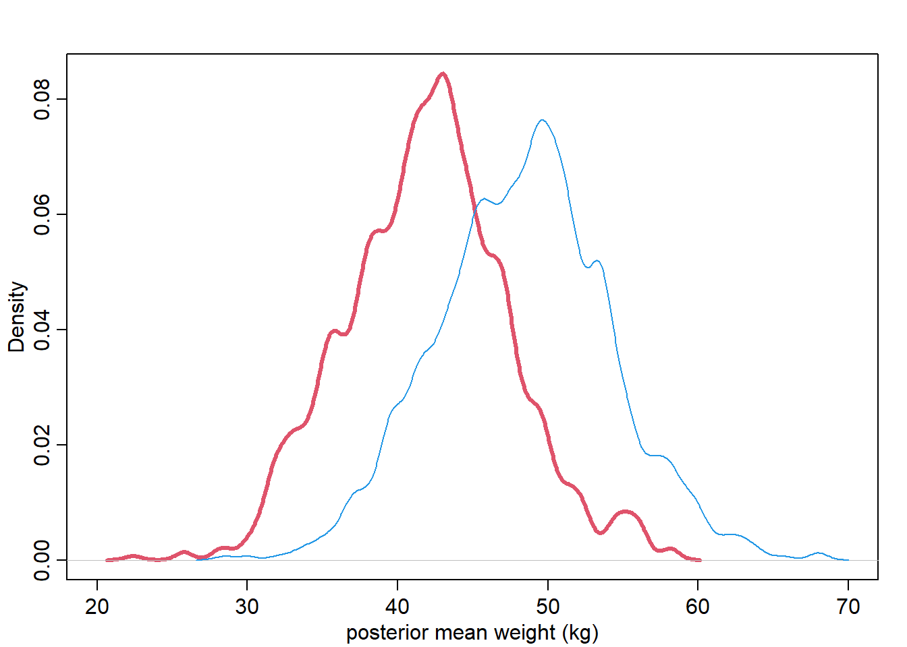
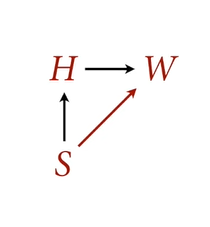

Let’s make a function that represents the relationships in this scientific (causal) model:

# simulation function #sim_HW <-function(S,b,a) {# S=1 female; S=2 male N <-length(S)# arbirtary parameters based on sex H <-ifelse(S==1, 150, 160) +rnorm(N, 0, 5)# a is the intercept; b is the slope W <- a[S] + b[S] * H +rnorm(N, 0, 5)data.frame(S, H, W)}# test the simulation function #rbern <-function(n, p =0.5) {rbinom(n, size =1, prob = p)}# generate sexes for personsS <-rbern(100) +1# pass the parameters a and b for each sexdat <-sim_HW(S, b=c(0.5,0.6), a=c(0,0))head(dat)
S H W
1 1 149.8310 62.27643
2 1 146.0825 76.61531
3 2 159.5063 98.03304
4 2 153.9408 90.19251
5 1 142.7231 76.50352
6 2 162.7157 101.02463
Finding the causal effect involves conditioning on the confounder or mediator to block the association. This implies computing the difference between posterior prediction which is formally called computing the contrast.
Finding the total causal effect

What’s the total causal effect of sex (through the two passes)? It is the difference made intervening. Let’s find that by testing
# female sampleS <-rep(1,100)simF <-sim_HW(S,b=c(0.5,0.6),a=c(0,0))# female sampleS <-rep(2,100)simM <-sim_HW(S,b=c(0.5,0.6),a=c(0,0))# effect of sex (male-female)mean(simM$W - simF$W)
[1] 20.58828
Now, we want to define the statistical model (i.e. generative model) of weight:
\[
W_i \sim Normal(\mu_i, \sigma)
\]
\[ \mu_i = \alpha_{S[i]} \]
\[ \alpha_j \sim Normal(60,10) \]
\[ \sigma \sim Uniform(0,10) \]
Let’s run the estimating model and synthetic sample
Find the mean weight for each sex (mean weight, NOT predicted weight!)
# sample from posterior (i.e. sample parameter values)post <-extract.samples(m_SW)# plot the posterior mean weight for each sex{# female in reddens(post$a[, 1], xlim=c(39,50), lwd=3, col=2, xlab="posterior mean weight (kg)")dens(post$a[, 2], add=TRUE, col=4)}

W1 <-rnorm(1e3, post$a[,1], post$sigma)W2 <-rnorm(1e3, post$a[,2], post$sigma)# plot the posterior predicted weight for each sex{# female in reddens(W1, xlim=c(20,70), lwd=3, col=2, xlab="posterior mean weight (kg)")dens(W2, add=TRUE, col=4)}

Compute contrast
To find the difference between posteriors of each category, we need to compute the contrast.
Note: overlap of distributions doesn’t indicate that they are the same or different!
Since we subtracted the posterior of women weights from the posterior of men weights, we can get the proportion at which the men have weight more than women by doing the following:
sum(W_contrast >0) /1e3
[1] 0.803
So 79% of the time, men are heavier than women in this population
sum(W_contrast <0) /1e3
[1] 0.197
So 20% of the time, women are heavier than women in this population
Direct causal effect of S on W

We need to block association through H = This means stratify by H.
Note: it is a common practice to subtract predictor (i.e. H) from its average in order to make the intercept reflecting the outcome value when the predictor equals the average value. This is called “centering”.
The parameter now is a linear model. Let’s define the whole model with code:
Error in quap(alist(W ~ dnorm(mu, sigma), mu <- a[S] + b[S] * (H - Hbar), : non-finite finite-difference value [3]
Start values for parameters may be too far from MAP.
Try better priors or use explicit start values.
If you sampled random start values, just trying again may work.
Start values used in this attempt:
a = c(67.3159817200256, 64.0591387473614)
b = c(0.0486216379795223, 0.888933669775724)
sigma = 3.84191120741889